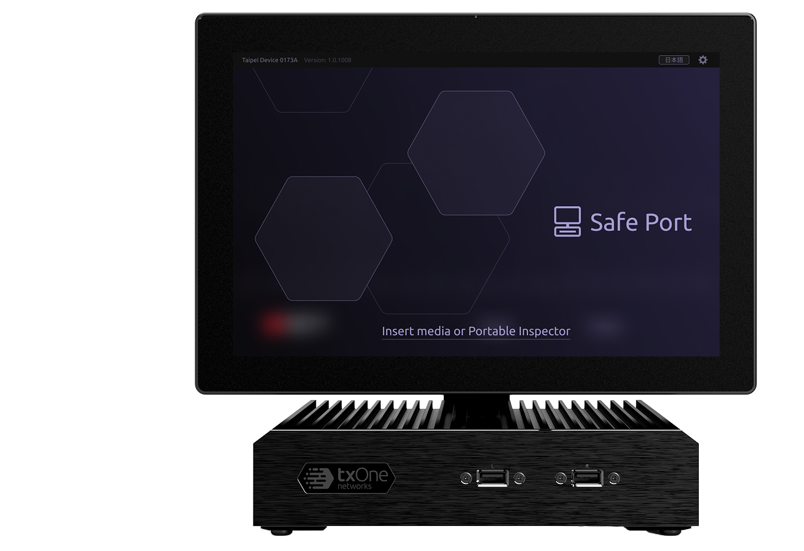

Safe Port is a kiosk-based malware scanning station deployed at factory entrances and high-security zone access points. It scans USB drives and storage devices carried by personnel before they enter the facility.
Unlike Portable Inspector which is operated by trained staff, Safe Port is used by anyone who enters — employees, contractors, and external visitors with no prior system familiarity. The core design challenge is delivering a completely self-guided experience that requires zero instruction.